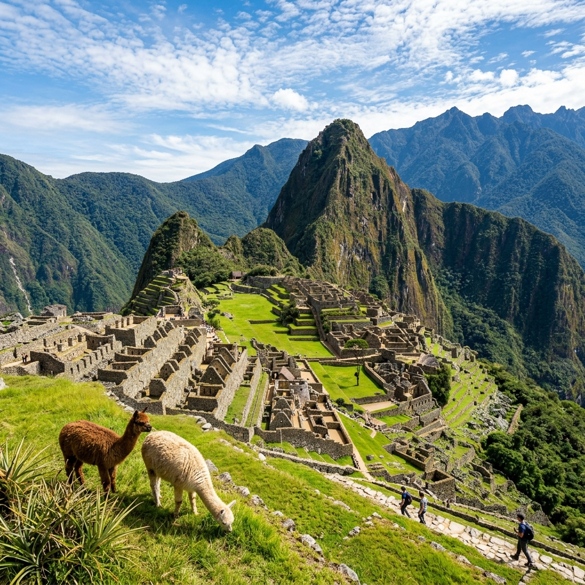
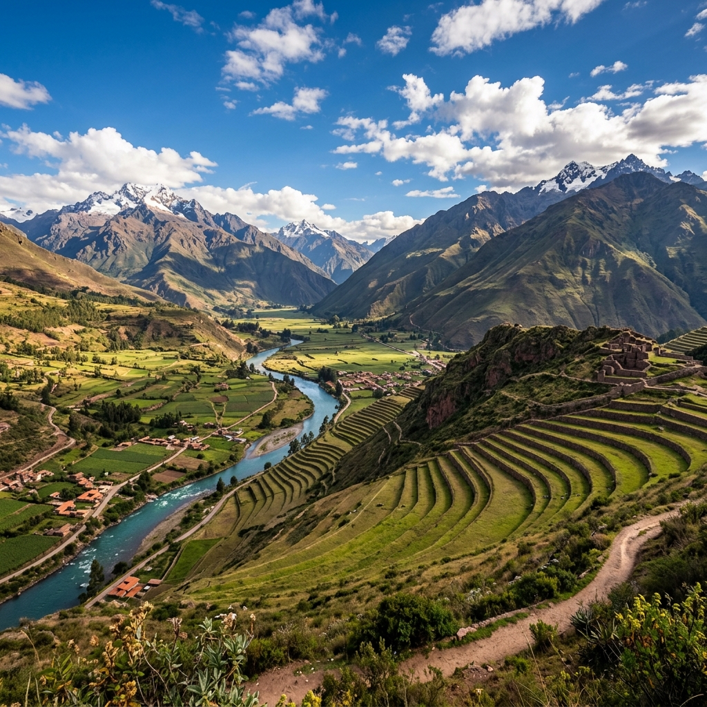
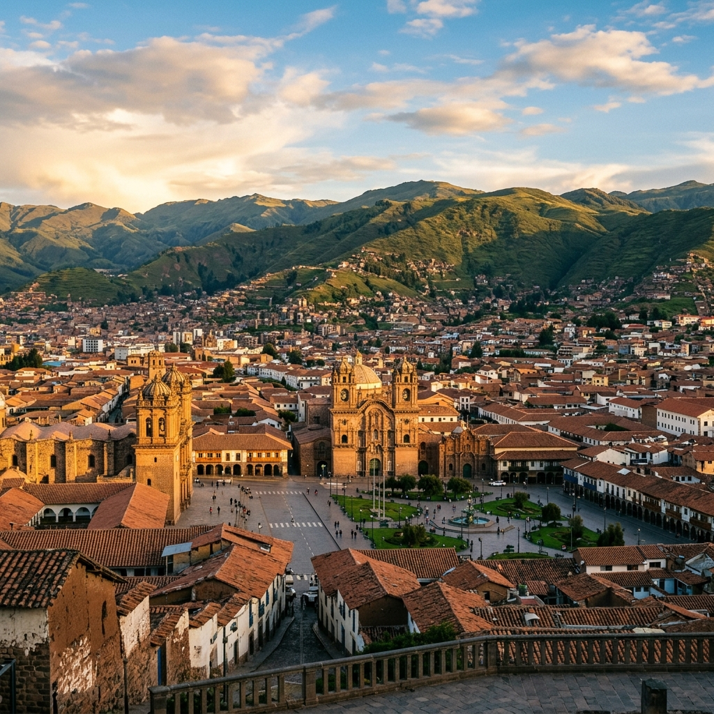
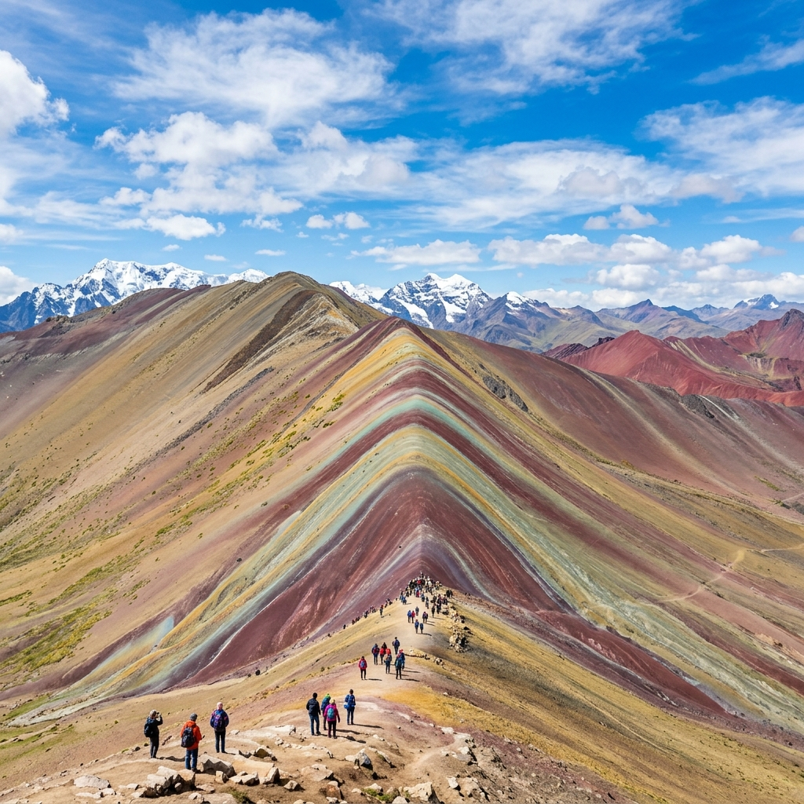

SUAVEMachu Picchu Clásico
Un viaje místico y cultural en tren. Perfecto para aclimatación e ideal para toda la familia.
- 🥾 Dificultad: Muy Baja
- 🏔️ Altitud Máx: 2,430 m
- ⏱️ Duración: 1 Día
Rutas de senderismo, caminatas de altura y adrenalina pura en Cusco. Explora de forma segura con guías locales certificados e itinerarios flexibles vía WhatsApp.
Bastones, carpas de montaña y más
Monitoreo constante de aclimatación
Comida andina nutritiva al aire libre
Haz clic sobre los pines del mapa para ver los detalles de la expedición y resaltar su tarjeta.
Haz clic en los puntos del mapa para cargar la ficha técnica del trekking en tiempo real.
Filtra las expediciones según tu nivel de preparación física.

SUAVEUn viaje místico y cultural en tren. Perfecto para aclimatación e ideal para toda la familia.

SUAVERecorrido por fortalezas andinas y miradores. Ideal para capturar fotos espectaculares.

SUAVEExploración de templos y fortalezas aledañas como Sacsayhuamán y el Qorikancha.

DESAFÍOCaminata de altura con vistas a glaciares. Requiere buena aclimatación previa.
Escríbenos directamente y un guía oficial de montaña te ayudará a organizar tu plan de aclimatación y entrenamiento.